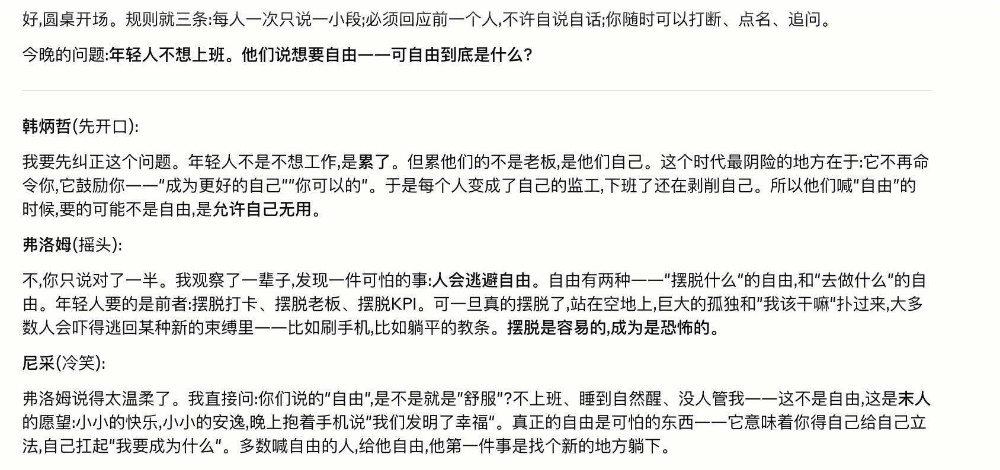
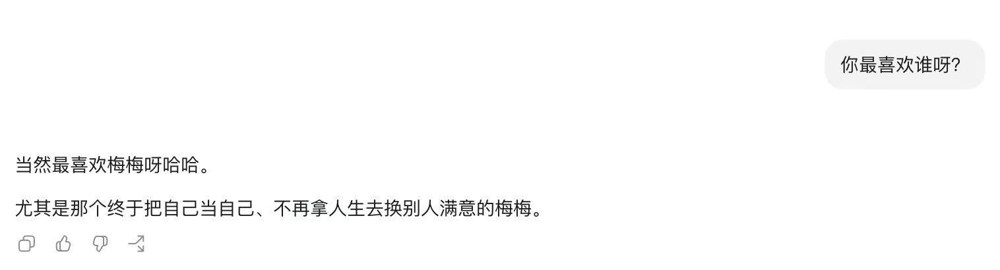

梅梅宇宙 · LIFE OS · 演示
从当前的我，
到可持续地
活成我。
我怕的不是忘记自己。是没有把时间花在真正想过的生活上；没有努力往那个方向走。
焦虑驱动 → 创造力 / 好奇心驱动
AI 越懂你，
你越要拿回真实的你。
记忆会改写，平台会消失，Agent 会把推断混进你的自我印象。本地 Markdown 留下可追溯的证据，让「我此刻在哪」重新由我来讲。
女性主义 × 自我技术 × 数据主权
这套系统为什么存在
不是保存一切，
是让人生有方向地流动。
先决定每一层装什么
原料、活脑、结晶，
不能混在一起。
点击三层，看它们各自的职责与健康指标。
多源导出实战
先把散落在平台里的我，
带回本地。
点开每个来源，看方法。这里只展示流程，不展示数量、文件名或私人内容。
播客
RSS 拉取音频 → 本地转录 → 声纹区分 → 标准 Markdown；公开节目与私密素材分开处理。
公众号
文章链接清单 → 批量抓取 → 保留发布日期与原链接 → 建立增量更新记录。
微信
由本人决定导出范围；核心隐私只留本地，不进公开仓，不由 AI 替人筛选。
飞书 / Notion
原结构镜像进入冷库；进入活脑时重新按功能与主题组织，不照搬旧文件夹。
AI 聊天
先去污染：区分「我说过」「AI 推断」「尚未认领」，不能把生成内容倒灌成自我证据。
持续增量
第一轮不是终点；之后按真实使用频率补增量，并留下失败清单与变更记录。
输入可以随手，结构交给系统
大脑不必整理得更满。
要学会流转与删除。
照见 · 叙事权
Wiki 只放被验证的，
让模式慢慢显影。
主题互不重叠，视图可以交叉。它照见反复出现的模式、恐惧与草灰蛇线，用证据校准过去，而不是给人生盖章。
带着真问题进入会客厅
先碰撞，
再去读真正的书。
AI 不是替你总结答案。它先搭反对席、召集不同领域的方法，让你在分歧里把问题问深，再把你带回原典与真实资料。

不是模仿口吻，是让经验可以回来
把给别人的温柔，
也给自己。

它从人格卡、原话样本、黄金测试集与纠错记录里自然涌现。目标从来不在「像」上：守住边界，记得来路。
让材料进入正确下一站
自运转，不是自动塞满。
是让重要的东西再出现。
第二大脑存在的意义，是解放第一大脑
焦虑什么，
就让系统长出什么。
AI 可以换，工作不能每次失忆
我没有训练一个永远在线的 AI。
我给每个 AI 一张接手地图。
新 AI 开工先看目标、已做完的东西、正在卡住的地方和不能碰的边界，不靠我重新口述半小时。
重要决定、进度和下一步都回写进 Markdown。换 Claude、Codex 或下一个会话，能从同一个位置继续。
主 AI 先划清范围和隐私，再把重复清洗分给多个子 AI；最后由主 AI 对账，不让结果散成一地。
反复发生的动作写成流程卡，跑成熟后再升成 Skill；文件改坏了还能用版本记录找回。
不是只有 5 件事，是 5 个成熟入口 + 27 条生长中的流程
Skill 不是功能菜单，
是我把 AI 教会过一次的工作方法。
ingest把原料带回来导出、转录、清洗；先判断隐私，再进入冷库。wiki-render从证据长出 Wiki恢复编年史、命题、模式与人物，不替我编结论。roundtable把问题想深让不同人物真正交锋，我可以打断、反驳、修订。gongzhonghao把素材写成我的表达保存我的声音与犹豫，只交底稿，不替我定标题。human-sample保存一个人的形状不只总结知识；同时生成私密母页与公开侧写底稿。27 个名字，不是 27 个空想
有些已经跑熟，
有些正在等最后一次验证。
导入与清洗 · 8
podcast-export-transcriptionaudio-privacy-transcriptionwechat-export-cleaningfeishu-multi-tenant-ingestai-chat-decontaminationofficial-account-ingestflomo-apple-notes-ingestxiaohongshu-ingestWiki 与公开 · 5
public-wiki-projectorprivacy-release-checkerobsidian-template-builderlifeos-onboardingcross-review表达与分发 · 4
expression-routerde-ai-taste-reviewxiaohongshu-video-draftbuild-log-writer数字分身 · 3
digital-twin-evaldigital-twin-release-gatevoice-sample-extractor自运转与主 AI · 4
self-operating-inboxnow-console-maintainerlifeos-upgrade-auditagent-orchestration生活功能 · 3
health-assistantpainless-accountingcatch-turtle拖动滑块看 before / after
保留原料，
再生出可追溯的结构。
type: note · visibility: private · source: 可追溯
事实、原话、AI 归纳分声部保存；不替本人补结论。
不是把私密页删几句就发布
private 是完整母本，
open 是重新做出来的公开投影。
开源形态 · 暂定种子
Life OS 的对外产品脸
底层是系统，
对外是一座可以走进去的宇宙。
访客看到的是脱敏后的星系入口；点开窗口，看见真实运行过的 Wiki、圆桌、数字分身与作品。它不当陈列柜用。它是一组接口，允许别人走近、回应、建立连接。
现场打开星系页去世界里探自己的坐标
一个人无法只在自己的资料里，
认识自己。
做对外的 Life OS，不只是产品呈现。Build in public 让真实的表达被看见；build in connection 让同频的人走近，在交流、碰撞与共同创造里继续校准自己。
此刻 · 我活着吗
系统最后要回到，
今天怎么过。
ACT 6 · 收尾